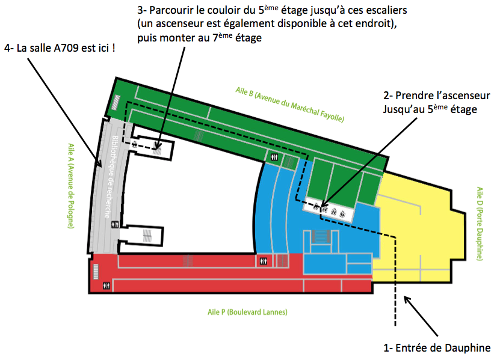
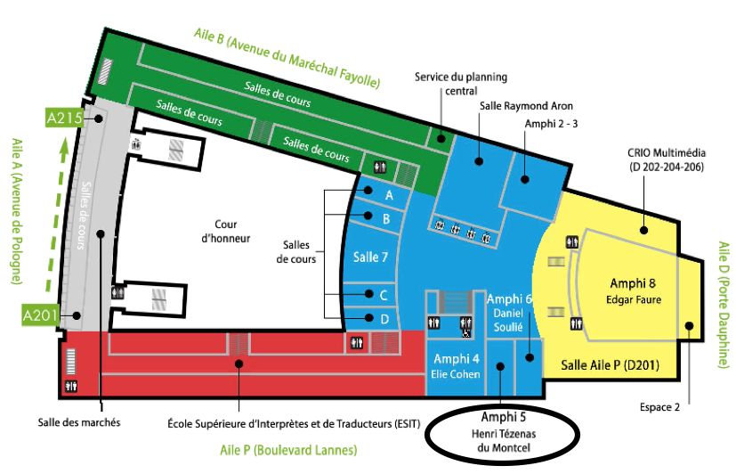

Informations pratiques
Venir à l'Université Paris-Dauphine
Plus d'informations sont disponibles sur la page de
l'université.
Par avion
Les aéroports Charles de Gaulle et Orly permettent d'accéder facilement au
centre de Paris.
Par train
Toutes les gares parisiennes sont à moins d'une heure de l'université en métro
et/ou RER.
Par transports en commun
- Métro: ligne 2
- RER: ligne C
Se Repérer à l'Université Paris-Dauphine
Pour vous rendre aux différents espaces de la conférence, veuillez vous référer aux plans ci-dessous.
Se rendre au 7e étage

Les amphithéâtres du 2e étage
